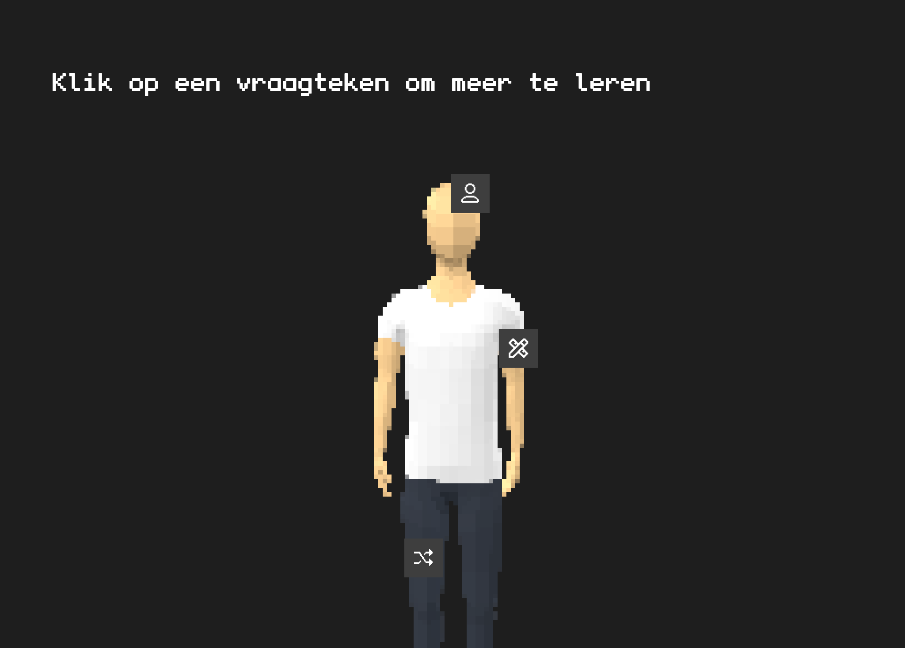
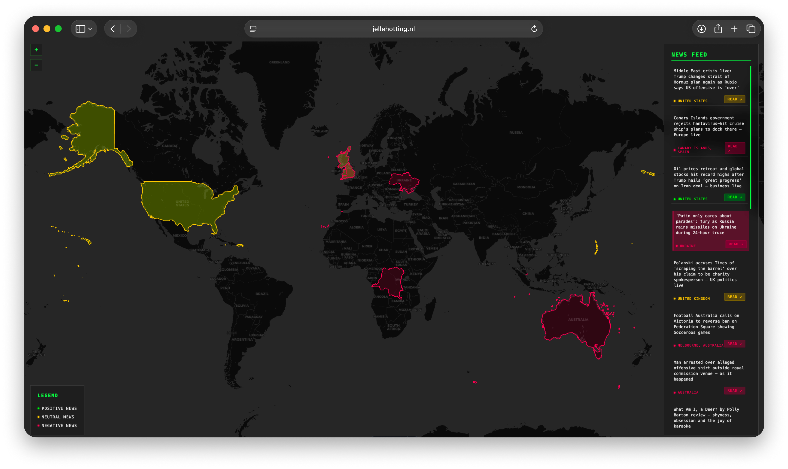
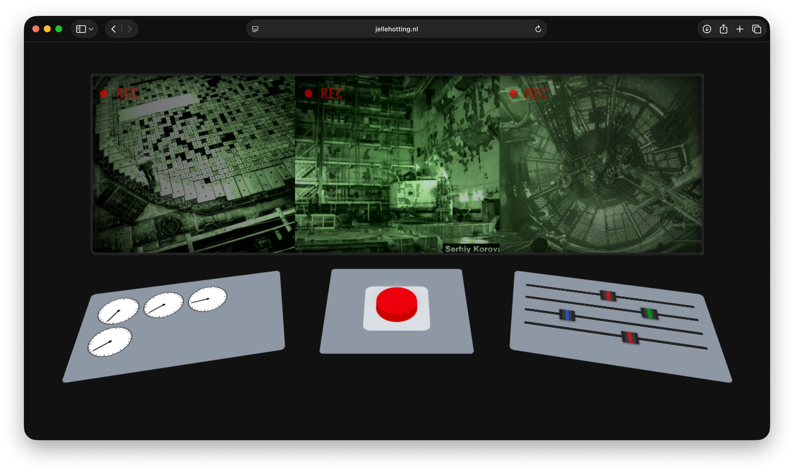
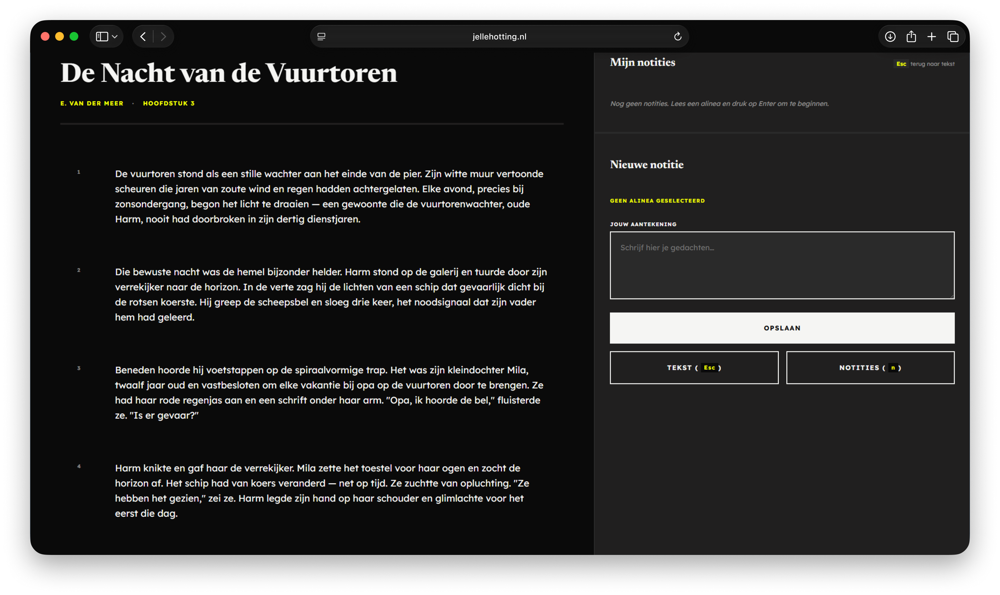
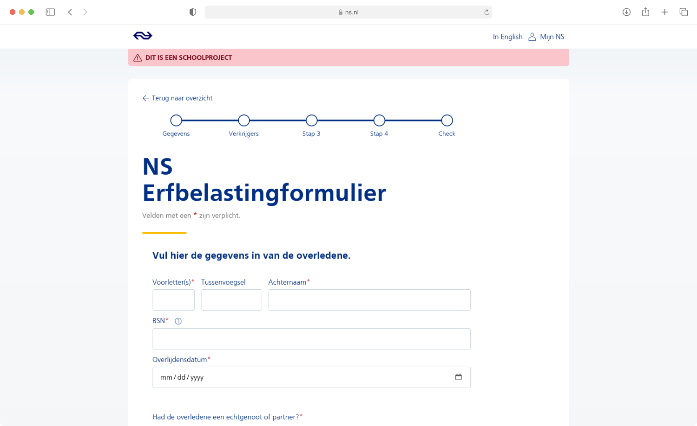
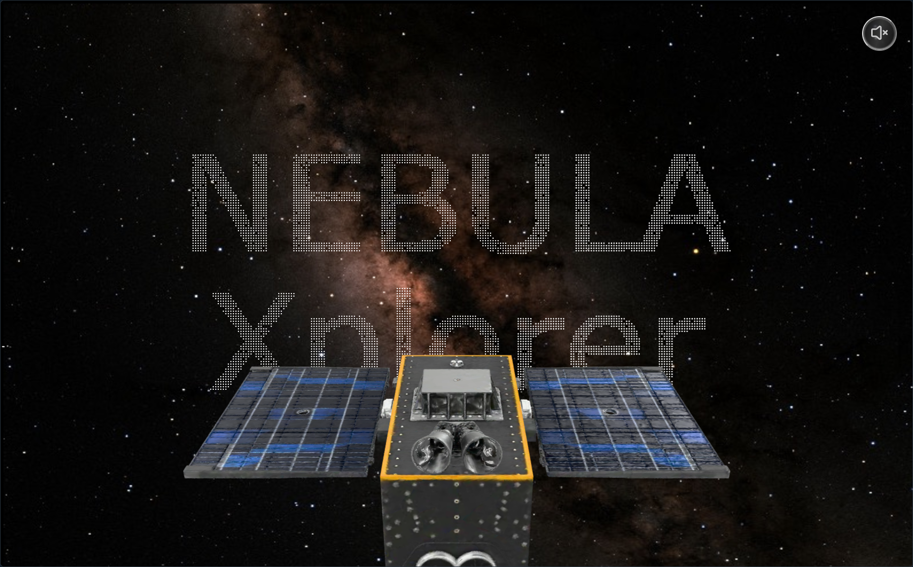

Samenwerken met code
Ik wil effectief samenwerken met Git (branches, pull requests en code reviews), zodat we veilig en duidelijk kunnen bouwen aan dezelfde codebase.
Reden: Dit is essentieel voor professionele softwareontwikkeling en teamwork.
Reflectie op de vakken die ik heb gevolgd:

Sprint 0 was weer even een opfrisser van wat code ook alweer kon en deed en de vrijheid die je ermee hebt t.o.v. Figma.

Bij dit vak heb ik veel geleerd over serverside APIs en hoe je op een veilige manier data opvraagt. Ook kwamen de AI API van Google Chrome aanbod. Overal heb ik mega veel geleerd van dit vak wat ik kan meenemen.

Bij dit vak heb ik zonder javascript een volledig funcitoneel controlepaneel gemaakt. De uitdaging hier was om javascript functionaliteit na te bootsen in CSS. Bij dit vak heb ik geleerd hoe ver CSS eigenlijk al is ontwikkeld.

Bij dit vak heb ik vooral geleerd dat toegankelijkheid niet een lijstje is die je kan afwerken maar dat je het beste kan testen met de verschillende beperkingen die er zijn.

Hier was het de opdracht om een zo robuust mogelijke formulier te maken met goeie errorhandeling en duidelijke feedback naar de gebruiker. Ik heb hier vooral geleerd hoe belangrijk het is om een formulier te maken die goed functioneerd.

Bij de hackathon was het belangrijk om binnen een korte tijd in groepsverband een werkend prototype neer te zetten. Ik heb hier dus vooral geleerd hoe belangrijk het is om goed samen te werken met je team en keuzes te maken samen.
Ik wil effectief samenwerken met Git (branches, pull requests en code reviews), zodat we veilig en duidelijk kunnen bouwen aan dezelfde codebase.
Reden: Dit is essentieel voor professionele softwareontwikkeling en teamwork.
Ik wil complexe CSS animaties en keyframes kunnen ontwerpen, zodat ik interactieve, duidelijke micro-interacties en state-changes kan bouwen.
Reden: Animaties verbeteren de gebruikerservaring en maken interfaces intuïtiever.
Ik wil leren hoe ik interfaces bouw die voor iedereen bruikbaar zijn, door diep in te zoomen op screenreader-support, toetsenbord-navigatie en het correcte gebruik van ARIA-labels.
Reden: Toegankelijkheid is een fundamenteel recht; als ontwikkelaar heb ik de verantwoordelijkheid om niemand uit te sluiten.
steps() voor vette flipbook-animaties./* Grid met FR units */
.container {
display: grid;
grid-template-columns: 2fr 3fr auto 1fr;
}
/* Steps animatie */
.keyvisual {
animation: stop-motion 3s steps(31, end) infinite;
}Mijn mening: Motiverend om meer met pure CSS te klooien.
<!-- Informatief -->
<img src="product.jpg" alt="Zwarte laptop">
<!-- Decoratief -->
<img src="line.svg" alt="">Mijn mening: Confronterend hoe vermoeiend een slechte site is voor screenreader-gebruikers.
@media (prefers-reduced-motion: reduce) {
.header-logo { animation: none; }
}
body {
font-family: -apple-system, BlinkMacSystemFont, "Segoe UI", Roboto;
}Mijn mening: Zet me aan het denken over privacy en platform-afhankelijkheid.
<div class="form-field">
<label for="name">Naam *</label>
<p id="name-help">Vul je volledige naam in</p>
<input id="name" aria-describedby="name-help" required>
</div>Mijn mening: Eye-opener over password managers en placeholders.
Mijn mening: Niels Leenheer was mega interessant met zijn hardware projecten.
<script async src="script.js"></script>
<script defer src="script.js"></script>
<!DOCTYPE html>Mijn mening: Goed om onder de motorkap te kijken voor performance keuzes.